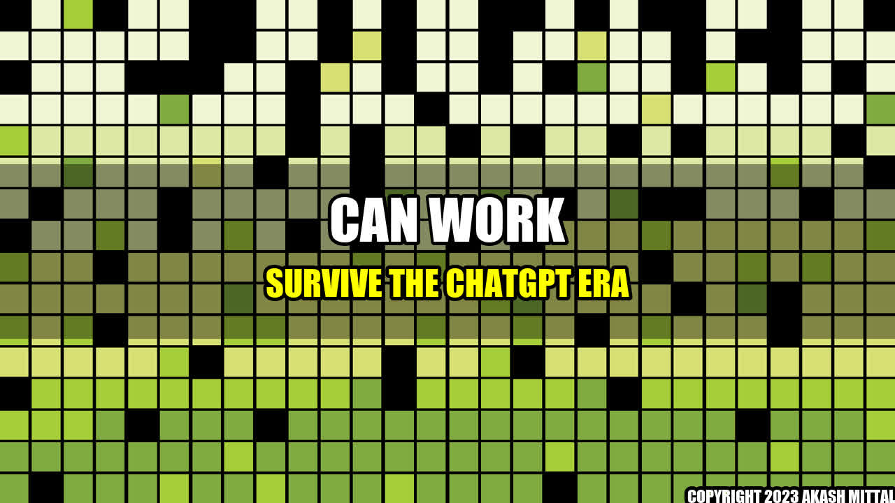

Can Work Survive the ChatGPT Era?

Once upon a time, in a busy office, the employees used to spend their days talking to each other face-to-face. But now, with the advent of ChatGPT, their conversations take place online, with virtual assistants such as chatbots, email notifications and instant messaging.
While ChatGPT has revolutionized the way people communicate in the workplace, many wonder whether it will have a negative impact on work culture and productivity. After all, virtual communication lacks the nuances of human interaction, such as body language and tone of voice. Moreover, people may feel less connected to their colleagues when they communicate solely over messages.
Concrete Examples
There are several examples of the positive and negative impact of ChatGPT on work:
- Positive:
- Chatbots can answer customer queries instantaneously, leading to increased customer satisfaction and sales.
- Virtual assistants can schedule meetings, set reminders and manage emails, freeing up time for employees to focus on other tasks.
- Negative:
- Employees may feel lonely and disconnected when they rely solely on virtual communication, leading to lower morale and productivity.
- ChatGPT may lead to a lack of clarity and understanding, as messages can be misunderstood or misinterpreted.
Conclusion
Despite the challenges, work can survive the ChatGPT era. Here are three key points to consider:
- Encourage face-to-face communication, whether it's in-person or through video conferencing. This will help employees feel more connected and reduce misunderstandings.
- Train employees to effectively use virtual assistants, so they can save time and improve productivity.
- Continually assess the impact of ChatGPT on work culture and make adjustments as needed. Technology is constantly evolving, and it's important to stay ahead of the curve.
References
Further Reading
Social
Share on Twitter Share on LinkedIn